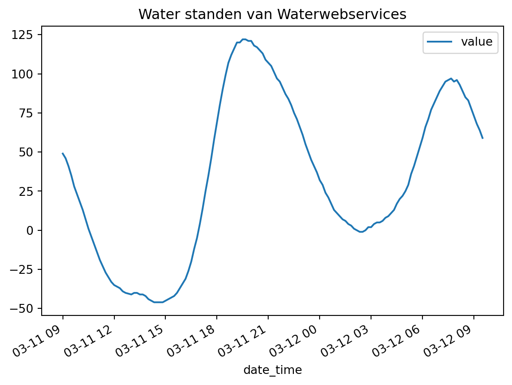
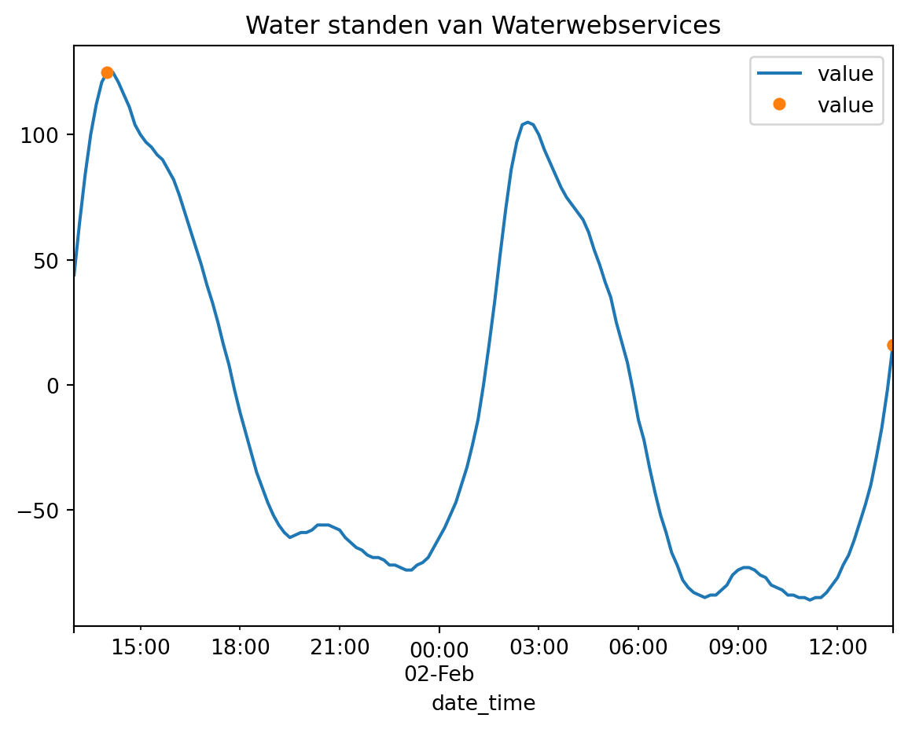

Quick start guide
Waar begin je met het implementeren van de toolbox continu inzicht? Dat kan best wisselend zijn en is per implementatie verschillend. Dit is namelijk afhankelijk van de wensen die je als gebruiker hebt en de randvoorwaarden van de omgeving waar in je implementeerd. Continu Inzicht is een operationeel systeem dus het ophalen de huidige belastingen is een goed begin punt.
Loads (belastingen)
In toolbox continu inzicht zijn een aantal bronnen voor belastingen opgenomen. Je kan natuurlijk ook data uit andere bronnen ophalen. Voor dit voorbeeld worden waterstanden uit RWS water webservices gebruikt. Alle voorbeelden zijn onder Belastingen inladen te vinden
Configuratie
GlobalVariables:
rootdir: "data_sets/103.quick_start_guide"
moments: [ -24, 0, 24, 48 ]
aquo_alias:
WATHTE [m][NAP][OW]: "WATHTE"
LoadsWaterwebservicesRWS:
parameters: [ "WATHTE" ]
MISSING_VALUE: 999
DataAdapter:
default_options:
csv:
sep: ";"
belasting_locaties_waterwebservices_RWS:
type: csv
path: "locaties.csv"
waterstanden_waterwebservices:
type: csv
path: "hidden_waterstanden_waterwebservices_rws.csv"
from pathlib import Path
import pandas as pd
path = Path.cwd() / "data_sets" / "102.quick_start_guide"from toolbox_continu_inzicht.base.data_adapter import Config, DataAdapter
config = Config(config_path=path / "loads.yaml")
config.lees_config()
data_adapter = DataAdapter(config=config)from toolbox_continu_inzicht.loads import LoadsWaterwebservicesRWS
waterwebservices_rws = LoadsWaterwebservicesRWS(data_adapter=data_adapter)
waterwebservices_rws.run(
input="belasting_locaties_waterwebservices_RWS",
output="waterstanden_waterwebservices",
)Deze reeks kan gebruikt worden om de waterstanden te tonen aan de gebruiker
df_waterstanden = data_adapter.input("waterstanden_waterwebservices")
df_waterstanden["date_time"] = pd.to_datetime(df_waterstanden["date_time"])
df_waterstanden.plot(
x="date_time", y="value", title="Water standen van Waterwebservices"
);
Loads to moments
De beslastingen worden gebruikt om een kans uit te rekenen. Deze berekening kan elk moment in de tijd, deze tijdsstippen leggen we vast en heten: ‘moments’. De moments worden (in uren) gedefineerd in de configuratie en zijn relatief ten opzichte van de tijd waarop de functie wordt uitgevoerd. Voor sommige toepassingen is het wenselijk om op een andere manier de tijden te beinvloeden; voor dat geval is de variable calc_time van toepassing, zoals in dit voorbeeld waarbij de data statisch is.
Om duidelijk te maken welk stukje configuratie bij welke functie hoort, is dit opgeknipt in aparte bestanden. In de praktijk hoeft dit niet zo te zijn en kan je een of een aantal keer de data adapter defineren.
Configuratie
GlobalVariables:
rootdir: "data_sets/102.quick_start_guide"
moments: [ -24, 0, 24, 48 ]
calc_time: '2026-02-02 06:53:00'
DataAdapter:
default_options:
csv:
sep: ";"
waterstanden_waterwebservices:
type: csv
path: "waterstanden_waterwebservices_rws.csv"
moments_waterstanden_waterwebservices:
type: csv
path: "momenten_waterstanden.csv"config = Config(config_path=path / "loads_to_moments.yaml")
config.lees_config()
data_adapter = DataAdapter(config=config)from toolbox_continu_inzicht.loads import LoadsToMoments
load_moments = LoadsToMoments(data_adapter=data_adapter)
load_moments.run(
input="waterstanden_waterwebservices",
output="moments_waterstanden_waterwebservices",
)df_waterlevels = data_adapter.input("waterstanden_waterwebservices")
df_moments = data_adapter.input("moments_waterstanden_waterwebservices")
df_waterlevels["date_time"] = pd.to_datetime(df_waterlevels["date_time"])
df_moments["date_time"] = pd.to_datetime(df_moments["date_time"])
ax = df_waterlevels.plot(x="date_time", y="value")
df_moments.plot(
x="date_time",
y="value",
title="Water standen van Waterwebservices",
lw=0,
markersize=5,
marker="o",
ax=ax,
)
df_moments[
["date_time", "value", "hours", "measurement_location_description", "value_type"]
]| date_time | value | hours | measurement_location_description | value_type | |
|---|---|---|---|---|---|
| 0 | 2026-02-01 14:00:00+01:00 | 125.0 | 0 | Hoek van Holland | meting |
| 1 | 2026-02-02 13:40:00+01:00 | 16.0 | 24 | Hoek van Holland | verwachting |
| 2 | 2026-02-02 13:40:00+01:00 | 16.0 | 48 | Hoek van Holland | verwachting |

Loads classify
Hierbij wordt per belastinglocaties een classificatie gemaakt met een bijbehorende kleur of duiding.
Bijbehorende configuratie
GlobalVariables:
rootdir: "data_sets/102.quick_start_guide"
moments: [ -24, 0, 24, 48 ]
DataAdapter:
default_options:
csv:
sep: ";"
belasting_locaties_grenzen:
type: csv
path: "belasting_locaties_grenzen.csv"
momenten_waterstanden:
type: csv
path: "momenten_waterstanden.csv"
geclassificeerde_waterstanden:
type: csv
path: "hidden_geclassificeerde_waterstanden.csv"config = Config(config_path=path / "loads_classify.yaml")
config.lees_config()
data_adapter = DataAdapter(config=config)from toolbox_continu_inzicht.loads import LoadsClassify
loads_classify = LoadsClassify(data_adapter=data_adapter)
loads_classify.run(
input=["belasting_locaties_grenzen", "momenten_waterstanden"],
output="geclassificeerde_waterstanden",
)data_adapter.input("geclassificeerde_waterstanden")| measurement_location_id | date_time | value | lower_boundary | upper_boundary | color | label | hours | |
|---|---|---|---|---|---|---|---|---|
| 0 | 1 | 2026-02-01 14:00:00+01:00 | 125.0 | -92.0 | 200.0 | #39870C | Normaal (-92 tot 200cm) | 0 |
| 1 | 1 | 2026-02-02 13:40:00+01:00 | 16.0 | -92.0 | 200.0 | #39870C | Normaal (-92 tot 200cm) | 24 |
| 2 | 1 | 2026-02-02 13:40:00+01:00 | 16.0 | -92.0 | 200.0 | #39870C | Normaal (-92 tot 200cm) | 48 |
Sections Loads
Vervolgens wordt een kopeling gelegd tussen de belastingslocatie en de dijkvakken. Hierbij is interpolatie tussen twee belasting locaties mogelijk.
config = Config(config_path=path / "sections_loads.yaml")
config.lees_config()
data_adapter = DataAdapter(config=config)from toolbox_continu_inzicht.sections import SectionsLoads
sections_loads = SectionsLoads(data_adapter=data_adapter)
sections_loads.run(
input=[
"dijkvak_namen",
"momenten_waterstanden",
"koppeling_dijkvak_belastinglocatie",
],
output="waterstanden_per_dijkvak",
)sections_loads.df_out[sections_loads.df_out["value_type"] == "meting"]| id | name | date_time | value | unit | parameter_id | value_type | |
|---|---|---|---|---|---|---|---|
| 0 | 1 | vak1.1 | 2026-02-01 14:00:00+01:00 | 125.0 | cm | 4724 | meting |
| 5 | 2 | vak1.2 | 2026-02-01 14:00:00+01:00 | 125.8 | cm | 4724 | meting |
| 10 | 3 | vak1.3 | 2026-02-01 14:00:00+01:00 | 126.2 | cm | 4724 | meting |
| 15 | 4 | vak1.4 | 2026-02-01 14:00:00+01:00 | 126.6 | cm | 4724 | meting |
Fragility Curves
Hier zijn een veel verschillende stappen mogelijk om fragility curves te laden, uit te rekenen en combineren. Deze zijn in andere documentatie en voorbeelden te vinden. In dit voorbeeld lezen we alleen de gecombineerde curve in en brekenen alleen de technische faalkans.
config = Config(config_path=path / "technical_failure_probability.yaml")
config.lees_config()
data_adapter = DataAdapter(config=config)from toolbox_continu_inzicht.sections import SectionsTechnicalFailureprobability
sections_failureprobability = SectionsTechnicalFailureprobability(
data_adapter=data_adapter
)
sections_failureprobability.run(
input=[
"technical_failure_probability_fragility_curves",
"waterstanden_per_dijkvak",
],
output="technical_failure_probability_data",
)sections_failureprobability.df_out.head(2)| section_id | name | date_time | value | unit | parameter_id | value_type | failureprobability | failuremechanism | |
|---|---|---|---|---|---|---|---|---|---|
| 0 | 1 | vak1.1 | 2026-02-01 14:00:00+01:00 | 125.0 | cm | 4724 | meting | 3.228006e-14 | COMB |
| 1 | 1 | vak1.1 | 2026-02-02 13:40:00+01:00 | 16.0 | cm | 4724 | verwachting | 3.195134e-24 | COMB |
In deze ‘quick start guide’ hebben we per locatie, voor meerdere tijdstappen de belasting opgehaald. Ook hebben we de faalkans bepaald op de opgegeven momenten voor een gecombineerde fragility curve. Vanaf hier kan dit voorbeeld uitgebreid worden naar meerdere faalmechanismen of functionaliteiten.